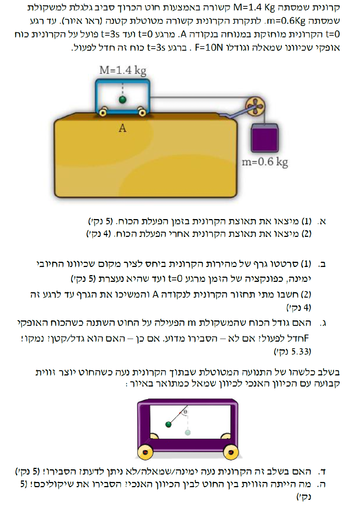

מסת הקרונית \( M = 1.4 \text{ kg} \), מסת המשקולת \( m = 0.6 \text{ kg} \). כוח אופקי שמאלה \( F = 10 \text{ N} \) פועל מרגע \( t=0 \) ועד \( t=3 \text{ s} \). המערכת מתחילה ממנוחה בנקודה A. תאוצת הכובד היא \( g = 10 \text{ m/s}^2 \).
את תאוצת המערכת (גודל וכיוון) בפרק הזמן שבו הכוח \( F \) פועל (\( 0 \le t \le 3 \text{ s} \)).
נשתמש בחוק השני של ניוטון: \( \sum F = ma \). כמו כן, נשתמש בנוסחה לכוח הכובד מתוך דף הנוסחאות: \( F_g = mg \). מכיוון שהחוט אידיאלי והגלגלת חסרת חיכוך, המתיחות \( T \) שווה לאורך החוט, וגודל התאוצה \( a \) של שני הגופים זהה.
ראשית, נבחר מערכת צירים. בהתאם לדרישת השאלה בהמשך (סעיף ב'), נקבע את הכיוון ימינה ככיוון החיובי עבור הקרונית. כדי להקל על הפתרון, נקבע את הכיוון מטה ככיוון החיובי עבור המשקולת. בצורה זו, תנועה חיובית של הקרונית (ימינה) גוררת תנועה חיובית של המשקולת (מטה), ולכן לשניהם תהיה בדיוק אותה תאוצה \( a \) עם אותו סימן. נשרטט תרשים כוחות (FBD) לכל גוף בנפרד:
נרשום את משוואות החוק השני של ניוטון לכל גוף בנפרד בכיוון ציר התנועה שלו:
נחבר את שתי המשוואות יחד. נשים לב שכוח המתיחות \( T \) הוא כוח פנימי ומצטמצם בחיבור האלגברי:
נציב את הנתונים כדי למצוא את \( a \):
קיבלנו תאוצה שלילית. המשמעות היא שכיוון התאוצה הפוך לכיוון החיובי שקבענו (ימינה), כלומר התאוצה היא שמאלה.
לאחר \( t=3 \text{ s} \), הכוח \( F \) פוסק, כלומר \( F = 0 \).
את התאוצה החדשה של המערכת (גודל וכיוון).
נשתמש שוב בחוק השני של ניוטון: \( \sum F = ma \). הפעם המערכת פועלת תחת כוח הכבידה של המשקולת בלבד.
נרשום שוב את משוואות הדינמיקה, הפעם ללא הכוח \( F \). נסמן את התאוצה החדשה ב- \( a' \):
נחבר את המשוואות ונקבל:
התאוצה הפעם יצאה חיובית, ולכן כיוונה הוא ככיוון הציר החיובי שקבענו (ימינה).
נקבע כי כיוון ימינה הוא החיובי. מתקיים: תאוצה \( a_1 = -2 \text{ m/s}^2 \) מ- \( t=0 \) עד \( t=3 \text{ s} \). המהירות ההתחלתית היא \( v_0 = 0 \). לאחר \( t=3 \text{ s} \), התאוצה היא \( a_2 = 3 \text{ m/s}^2 \).
(1) לשרטט גרף מדויק של מהירות-זמן עד לרגע העצירה של הקרונית.
(2) לחשב מתי הקרונית חוזרת לנקודה A, ולהמשיך את הגרף עד לרגע זה.
לחישוב מהירויות נשתמש בנוסחת הקינמטיקה לתנועה שוות תאוצה: \( v = v_0 + at \).
העיקרון המרכזי לחישוב העתק (מקום) מתוך גרף מהירות-זמן הוא חישוב השטח הכלוא בין הגרף לציר הזמן: \( \Delta x = \text{Area} \), או שימוש בנוסחת מקום-זמן: \( x = x_0 + v_0 t + \frac{1}{2}at^2 \).
נחשב תחילה את המהירות ברגע הפסקת הכוח (\( t=3 \)):
נמצא מתי הקרונית עוצרת. המהירות שלה היא -6, והיא מתחילה להאיץ ימינה בתאוצה של 3. נשווה מהירות לאפס:
עד כאן החלק הראשון של הסעיף (גרף עד לעצירה ב- \( t=5 \)). כעת, נחשב את העתק הקרונית עד רגע העצירה. זהו שטח המשולש שנוצר בגרף (מתחת לציר, שטח שלילי שמשמעותו תנועה שמאלה מנקודה A):
כדי לחזור לנקודה A, הקרונית צריכה לנוע ימינה העתק של \( \Delta x_2 = +15 \text{ m} \) החל מרגע העצירה (\( t=5 \)) בו מהירותה אפס. נחשב כמה זמן ייקח לה לעבור מרחק זה בתאוצה החדשה של 3:
כלומר היא חוזרת לנקודה A בזמן הכולל של: \( t_{total} = 5 + 3.16 = 8.16 \text{ s} \).
המהירות שלה ברגע החזרה תהיה: \( v(8.16) = 0 + 3 \cdot (\sqrt{10}) = 3\sqrt{10} \approx 9.49 \text{ m/s} \).
תאוצת המערכת בחלק הראשון הייתה \( a_1 = -2 \text{ m/s}^2 \) (כיוון מטה נחשב שלילי במונחי משוואת המשקולת כי המערכת האיצה שמאלה ולמעלה). בחלק השני התאוצה היא \( a_2 = 3 \text{ m/s}^2 \) (המשקולת מאיצה מטה).
לקבוע האם כוח המתיחות \( T \) שונה בין שני שלבי התנועה, ואם כן, האם גדל או קטן. יש לספק נימוק.
נבחן את משוואת הכוחות עבור המשקולת (שכן עליה פועלים רק כוח הכובד והמתיחות, מה שמפשט את הניתוח): \( mg - T = m \cdot a \). נחלץ את המתיחות: \( T = m(g - a) \).
נחשב את המתיחות בכל שלב:
מבחינה דינמית: כאשר המשקולת מאיצה כלפי מעלה (שלב א'), שקול הכוחות עליה חייב להיות כלפי מעלה, כלומר המתיחות חייבת להיות גדולה מכוח הכובד הפועל עליה (\( T > mg \)). כאשר המשקולת מאיצה כלפי מטה (שלב ב'), שקול הכוחות חייב להיות כלפי מטה, כלומר המתיחות קטנה מכוח הכובד (\( T < mg \)).
מוצג איור בו המטוטלת בתוך הקרונית נוטה שמאלה ביחס לאנך.
לקבוע האם הקרונית נעה ימינה, שמאלה, או שלא ניתן לדעת רק מנתון זה, ולהסביר.
החוק השני של ניוטון (\( \sum \vec{F} = m\vec{a} \)). כיוון שקול הכוחות זהה לכיוון התאוצה. עקרון מקינמטיקה: וקטור התאוצה מעיד על שינוי המהירות, ולא על כיוון המהירות עצמה.
נשרטט תרשים כוחות עבור המסה של המטוטלת התלויה בתוך הקרונית:
הכוחות הפועלים על המשקולת הם כוח הכובד כלפי מטה, ומתיחות החוט באלכסון ימינה ולמעלה. הרכיב האנכי של המתיחות מאזן את כוח הכובד. הרכיב האופקי של המתיחות פועל ימינה והוא הכוח השקול היחיד בציר האופקי. מכאן נובע שלמטוטלת (ולקרונית כולה) יש תאוצה שמאלה. סליחה, הרכיב האופקי פועל ימינה, לכן התאוצה היא ימינה!
האם תאוצה ימינה אומרת שהגוף נע ימינה? לא בהכרח. ראינו בגרף (סעיף ב') שכאשר לקרונית יש תאוצה ימינה (השלב השני, \( t>3 \)), היא נעה שמאלה עד רגע העצירה (\( v < 0 \), גודל המהירות קטן), ולאחר מכן מתחילה לנוע ימינה (\( v > 0 \), גודל המהירות גדל).
כיוון שהמטוטלת נוטה שמאלה, קבענו שהתאוצה היא ימינה. לכן מדובר במצב של החלק השני של התנועה, בו התאוצה היא \( a = 3 \text{ m/s}^2 \).
את הזווית \( \theta \) שיוצר החוט עם האנך.
פירוק וקטור הכוח (המתיחות \( T_p \)) לרכיבים. החוק השני והראשון של ניוטון עבור צירי התנועה של המטוטלת:
ציר אופקי (מאיץ): \( \sum F_x = T_p \sin\theta = ma \)
ציר אנכי (שיווי משקל): \( \sum F_y = T_p \cos\theta - mg = 0 \)
מתוך המשוואה בציר האנכי נחלץ את המתיחות ונציב בציר האופקי. (לחלופין, נחלק את המשוואות זו בזו).
נציב את ערך התאוצה שמצאנו (תאוצת הקרונית בשלב זה היא \( 3 \text{ m/s}^2 \)):
נעגל את התשובה ל-3 ספרות מהותיות כנדרש.